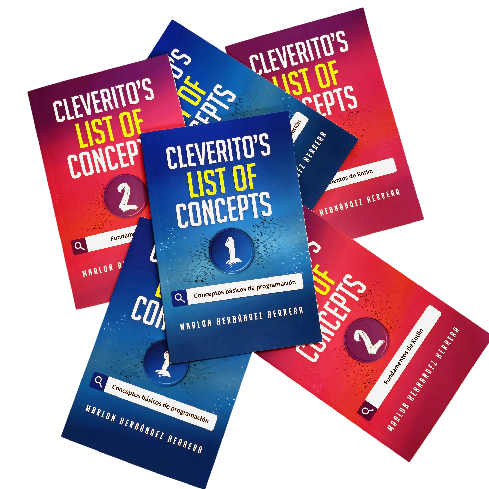

<section class="library-context section" id="library-context.section">
    <div class="container-context">

        <div class="context-with-img">
            <div class="context-text">
                <h4>CLOC nace como consecuencia de muchos años de pasar por una considerable cantidad de procesos de
                    selección, cuyas entrevistas técnicas y conceptuales empezaban a dibujar un patrón en mi
                    memoria; dando lugar a pensamientos como:</h4>
                <p><em>“Generalmente me preguntan los mismos conceptos básicos”,</em></p>
                <h4>o también</h4>
                <p><em>“Cada vez que voy a estudiar tengo que volver a googlear cada cosa que quiero recordar”.</em>
                </p>
                <h4>Por esto,</h4>
            </div>
            
        </div>


        <div class="context-text-long">
            <h2>He recopilado y centralizado en <span style="color: #FBE803">CLOC</span> la mayor cantidad de conceptos de
                programación que he considerado relevantes.</h2>
        </div>

    </div>
</section>